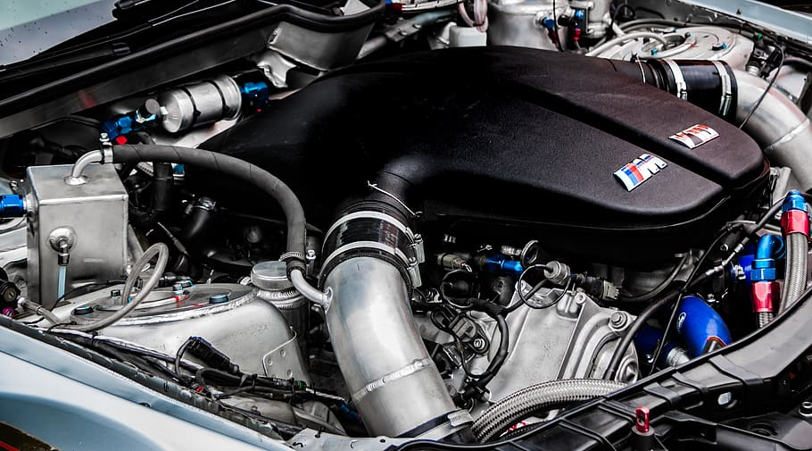

Certyfikaty
2.1 - Serwis, konserw. i naprawa nowoczesnych układów hamulcowych
2.1 - Maintenance and Servicing of Modern Braking Systems
2.1 - Wartung und Instandhaltung moderner Bremsanlagen


2.2 - Serwis i diagnostyka nowoczesnych układów hamulcowych
2.2 - Servicing and Diagnostic Analysis of Modern Braking Systems
2.2 - Service und Diagnose an modernen Bremssystemen
2.3 - Elektroniczne podstawy praktyczne na przykladzie ATE/VDO
2.3 - Electrical Basics in Practice Using ATE/VDO as an Example
2.3 - Elektrische Grundlagenpraxis am Beispiel ATE/VDO


2.4 - Systematyczne wyszukiwanie usterek w Systemach ABS
2.4 - Systematic Troubleshooting on ABS Systems
2.4 - Systematische Fehlersuche an ABS-Systemen
Niniejsza propozycja usług nie jest końcową ofertą handlową w myśl ustawy o prawie handlowym i nie może stanowić dowodu w sprawie o nieuczciwej konkurencji, jest tylko propozycją wstępną do zawarcia umowy usługi lub sprzedaży. Niektóre z parametrów urządzeń i sposób ich montażu, nie są ujawniane ze względu na dobro danych osobowych klienta i tajemnicy zabezpieczeń. Zmiany wzornictwa i danych technicznych w związku ze stałym ulepszaniem produktu zastrzeżone. Wszystkie nazwy firmowe i nazwy produktów, producentów i znaki towarowe są znakami towarowymi, zastrzeżonymi znakami towarowymi lub nazwami handlowymi i należą do odpowiednich właścicieli. Są użyte jedynie w celach informacyjnych i porównawczych, do jakiej marki samochodu, produktu lub usługi mogą należeć. Pomyłki w tekście i zmiany cen produktów i usług nie zamówionych bez uprzedzenia zastrzeżone.